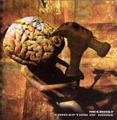

| Artist: | Necrost |
| Title: | Conception Of Noise |
| Label: | Starless Records mc 02-2004/str 005 |
| Length(s): | 43 minutes |
| Year(s) of release: | 1999/2001/2004 |
| Month of review: | [10/2005] |
| 1) | Divine | 4.52 | |||||||||
| 2) | Revelation 2.0 | 2.47 | |||||||||
| 3) | Unique | 4.06 | |||||||||
| 4) | '04 | 0.53 | |||||||||
| 5) | ...Behind The Noise | 4.55 | |||||||||
| 6) | Spasmodic Consecration | 4.50 | |||||||||
| 7) | | 3.18
| 8) | Pseudo | 6.04
| 9) | M.A.C. | 4.34
| 10) | Worm | 6.35
| |
Revelation 2.0 shows us a vocalist in torment while somebody recites some Russian text. I have no idea why that may be. Unique actually has a rather catchy rhythm guitar lined by nice synths. The sound is much more coherent here, but how that develops...who knows. The death vocals are not to be forgotten here, growling as usual and with a bit of grunt as well. There is plenty of drive here, that is until we end up in the groovy middle part in which the grunts come back in.
The fourth track '04 is a short interlude On the final track of this recording session, ...Behind The Noise, we get plenty of grunts but it starts out manically with gurgling keyboards and somewhat classically sung vocals. There is plenty of energy in this track, and yes there are quite a few symphonic elements (think The Wicked) here with the keyboards and the more epic approach. Even the clean vocals return, and we get an actual melodic guitar solo. With this song, the band certainly turns towards symphonic rock, and shows that it may have a future there too.
The next five tracks are from an earlier EP which did not yet include a keyboardist. The sound of these tracks is also a bit less loud and sharp. On Spasmodic Consecration we get the usual gargle, but the chords do lend power to the music. This is more like plain death metal, but still melodic in outset if you can follow the rhythm guitar. Sometimes, I hear an echo of Neurosis, but the grunts are much more prominent and there is not much time for building atmospheres and such. The pace is steady and high, but not overly so. Within its genre, this is decent material.
Sorry about the next title, but I did make the effort to turn the
Cyrillic title into something alphabetical, so Pseudo brings us to another relatively long track, in which the metal reigns.
There are some vocals here, but where are they? Far in the back.
For the rest this is heavy plodding drums and a rhythm guitar drone.
I get the impression I am hearing keyboards here, or is that the guitar?
Again, I hear echoes of Neurosis (not surprising because that is the band
in this genre with which I am most familiar). Some people think of Opeth
here (on their death metal albums), but Opeth spends more time on
atmospherics and thus gets a more epic character. At the end we get piano
and eerie keyboards. Thus they counter my recent position. There are
no credits for these though.
M.A.C. opens as rock rock 'n' roll taken a bit further. However, the next
passage has more epic tendency and a nice melody running throughout.
I guess Cradle Of Filth is a standard reference with this type of music.
At the end, the bombasm sets in for a while with some ethereal playing.
Worm is the closer, and also the longest track on this album.
Powerful stuff here, not as finicky as the first half of this album.
Conclusion
The first half of this album holds a promise. I was not convinced during the
first few tracks which also had some problems with the mix in my opinion
(the vocals were too far off) and they want to make things a bit
too complex at times. I can surmise that they do have a good singer
in this band, and if can keep that up combined with few growls and grunts,
then listening to Behind The Noise I get the impression this band could
grow into a really good combination of symphonic rock and death metal. The
second part of the album is not bad either, although more confined to the
death metal genre. The melodies are okay (if you listen around the noise
to hear them), and there is already an epic feel. The nice thing about the
Necrost EP is that the composition develop more gradually compared to the much
more hectic first tracks.